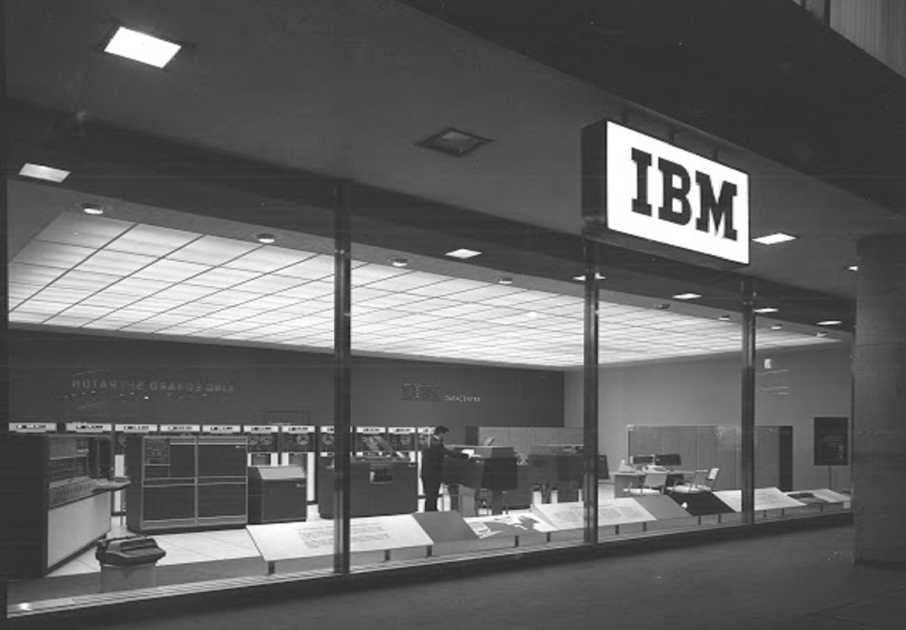
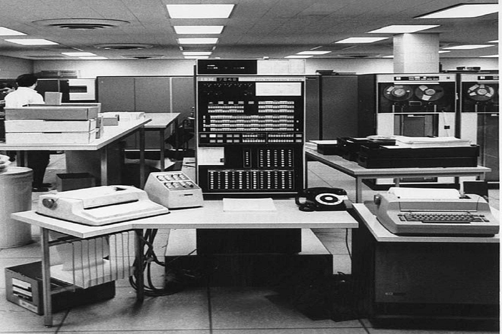

Fresh Start Chapter One
IBM invests more than $1 million to redesign the Electromatic Typewriter, improve research facilities and establish service centers.
THINK
A Forum on the Future of Leadership brought together leaders from government, business, academia and science, along with an audience of up-and-coming leaders from across the globe, to deepen our collective understanding of the keys to success on a smarter planet.

SELL
As part of our process, we carefully select and meticulously care for each typewriter that passes through our centers to ensure that the experience for each customer is one they will remember.

RESEARCHS
IBM research : "Inventing What’s Next"